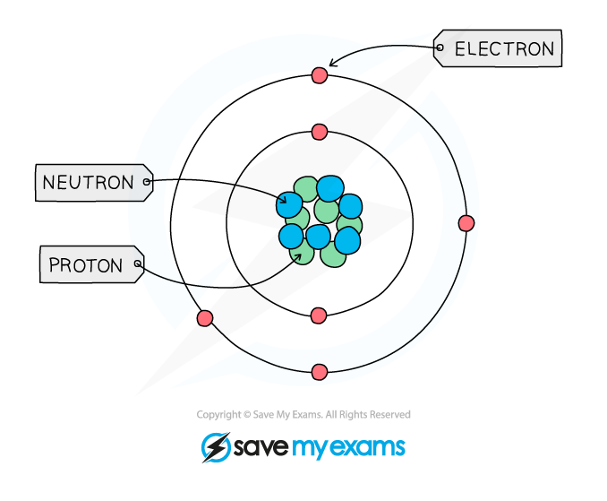
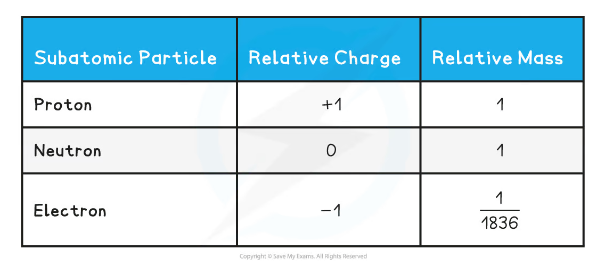
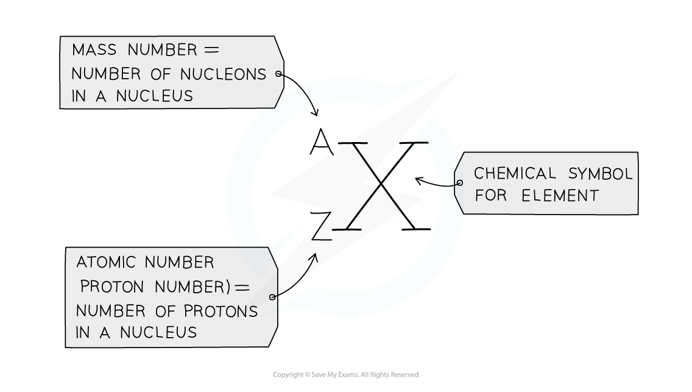
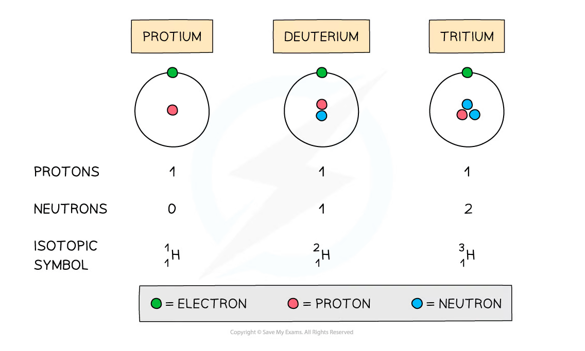
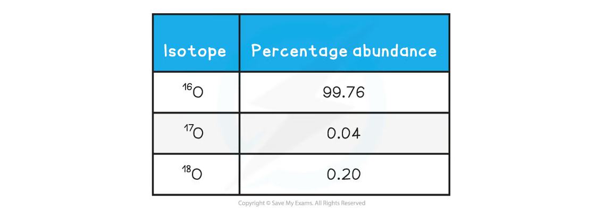
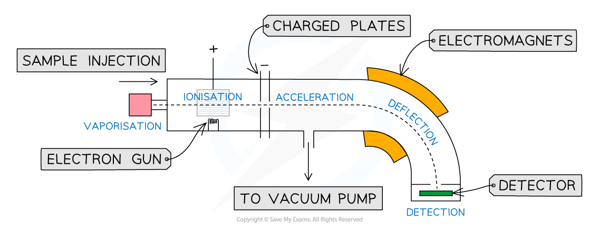
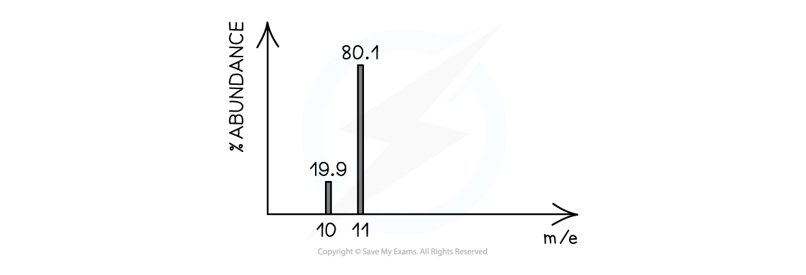
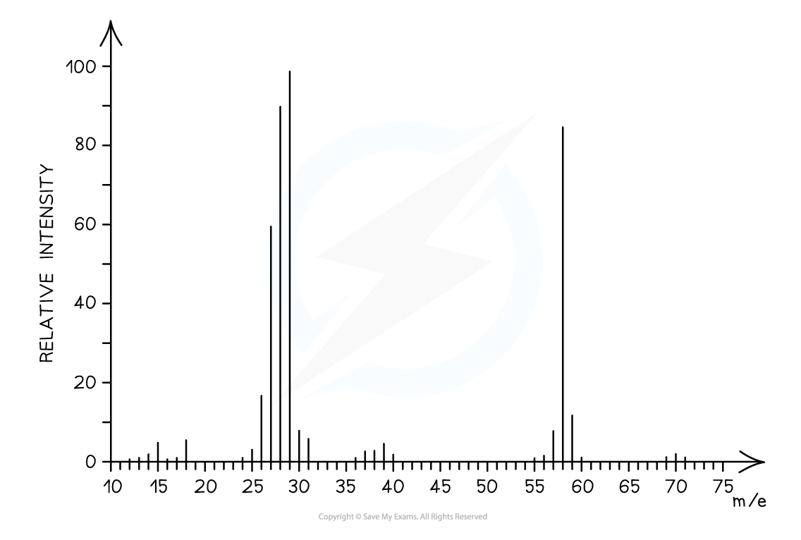
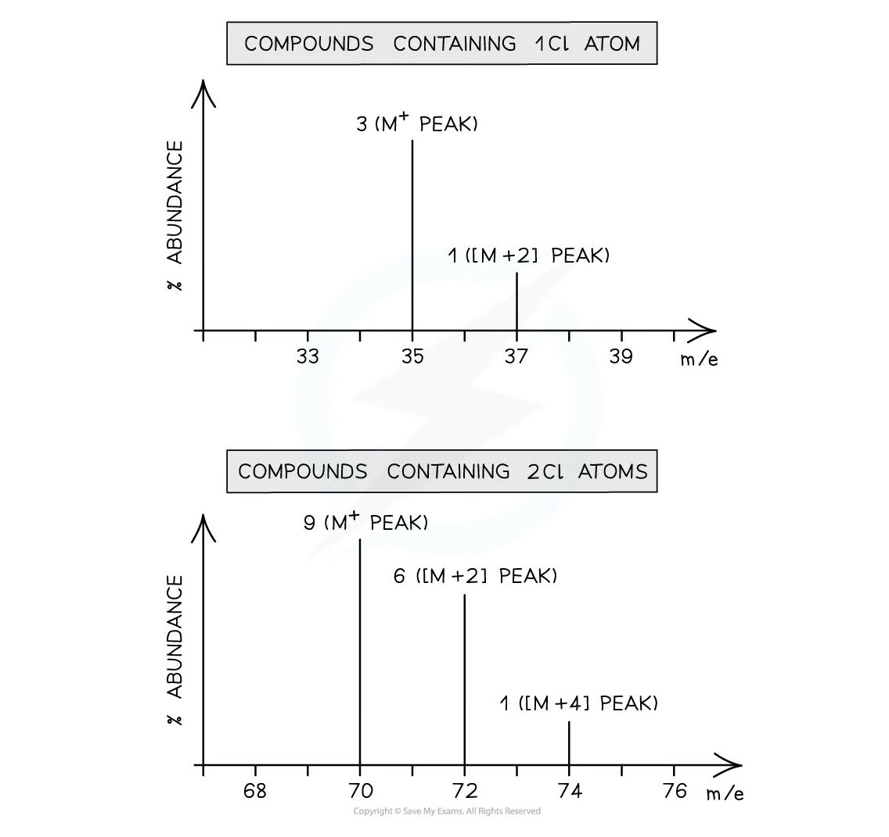
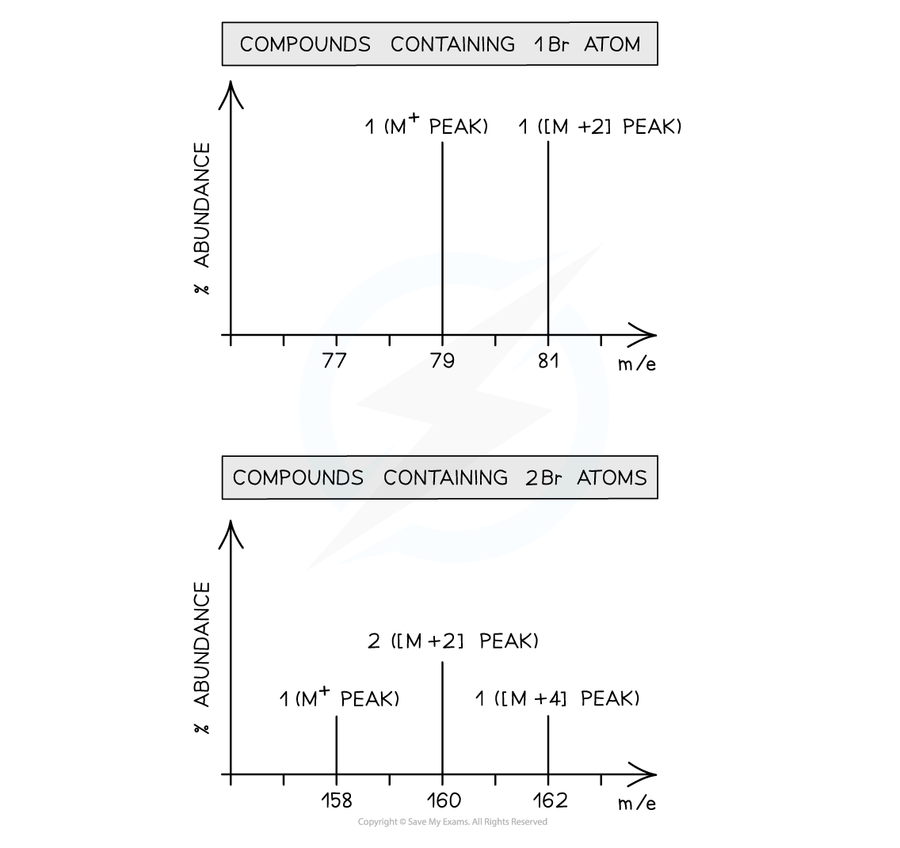

1.3 Atomic Structure
Sub-atomic particles, isotopes and mass spectra
1.3 Atomic Structure
本页对应 1.3 Atomic Structure.pdf.pdf，整理 sub-atomic particles、atomic number、mass number、isotopes、relative atomic mass，以及 mass spectrometry。专业词汇保留 English，并把 isotope notation、mass spectrum interpretation 和 calculation 分开说明。
Learning objectives
学完本页后，你应该能够：
- describe the relative charge and relative mass of a proton、neutron and electron；
- use atomic number and mass number to determine numbers of protons、neutrons and electrons；
- write isotopic symbols and explain why isotopes have similar chemical properties；
- calculate relative atomic mass from isotope abundances；
- describe the stages of a time-of-flight mass spectrometer；
- interpret mass spectra of elements and molecules，including M⁺、M+2 peaks and isotope patterns。
1.3.1 Sub-atomic particles
Structure of an atom
An atom contains a tiny dense nucleus surrounded by electrons in shells. The nucleus contains protons and neutrons；electrons occupy the space around the nucleus。

| Particle | Relative charge | Relative mass | Location |
|---|---|---|---|
| Proton | +1 |
1 |
nucleus |
| Neutron | 0 |
1 |
nucleus |
| Electron | -1 |
1/1836 |
outside the nucleus |

The mass of an atom is concentrated in the nucleus because the electron has a very small relative mass. In a neutral atom，the number of electrons equals the number of protons，so the total charge is zero。
Atomic number and mass number
The notation for an atom is：
\[ {}^{A}_{Z}\mathrm{X} \]
Zis the atomic number：the number of protons。Ais the mass number：the total number of protons and neutrons，also called the number of nucleons。Xis the chemical symbol。

Therefore：
\[ \text{number of protons}=Z \]
\[ \text{number of neutrons}=A-Z \]
For a neutral atom：
\[ \text{number of electrons}=Z \]
For an ion，adjust the electron number according to the charge：
\ce{Na+}has 11 protons and 10 electrons。\ce{Mg^{2+}}has 12 protons and 10 electrons。\ce{Cl-}has 17 protons and 18 electrons。
The number of protons identifies the element and does not change when an ion forms. Only the number of electrons changes during ion formation。
Worked example：numbers of particles
Determine the numbers of protons、neutrons and electrons in \ce{^{24}_{12}Mg^{2+}}。
- Protons
= Z = 12。 - Neutrons
= A - Z = 24 - 12 = 12。 - A
2+ion has lost two electrons，so electrons= 12 - 2 = 10。
For \ce{^{12}_{6}C}，there are 6 protons、12 - 6 = 6 neutrons and 6 electrons。
1.3.2 Isotopes
Definition and properties
Isotopes are atoms of the same element with the same number of protons but different numbers of neutrons。
They have the same atomic number but different mass numbers：
\[ {}^{12}_{6}\mathrm{C},\quad{}^{13}_{6}\mathrm{C},\quad{}^{14}_{6}\mathrm{C} \]
The isotopes of hydrogen are a useful example：

Isotopes have almost identical chemical properties because they have the same electron arrangement and therefore form the same types of chemical bonds. They may have different physical properties，such as density、diffusion rate and melting point，because their masses are different。
Relative atomic mass
Most elements exist naturally as a mixture of isotopes. The relative atomic mass Aᵣ is the weighted mean mass of the isotopes compared with 1/12 of the mass of a carbon-12 atom：
\[ A_r=\frac{(\text{isotopic mass}_1\times\text{abundance}_1)+(\text{isotopic mass}_2\times\text{abundance}_2)+\cdots}{100} \]
Use percentage abundance as the numbers in the numerator. If abundance is given as a decimal fraction，do not divide by 100 again。
Worked example：oxygen
Oxygen contains three isotopes：

\[ A_r(\ce{O})=\frac{(99.76\times16)+(0.04\times17)+(0.20\times18)}{100} \]
\[ A_r(\ce{O})=16.0044\approx16.0 \]
The relative atomic mass is not necessarily a whole number because it is a weighted average of naturally occurring isotopes。
Mass spectrometry
Purpose
A mass spectrometer can be used to：
- identify isotopes and determine their relative abundance；
- calculate the relative atomic mass of an element；
- determine the relative molecular mass of a compound；
- provide information about molecular fragments and help identify an organic compound。
Time-of-flight mass spectrometer
The main stages are：
- Ionisation：the sample is vaporised and bombarded by high-energy electrons，forming positive ions。
- Acceleration：charged ions are accelerated by an electric field so that ions receive the same kinetic energy。
- Deflection / separation：ions travel through a flight tube. Lighter ions travel faster；heavier ions travel more slowly。
- Detection：ions arrive at the detector at different times and produce a signal。

The mass-to-charge ratio is written as m/e or m/z。For singly charged ions，the numerical value of m/z is approximately the mass of the ion in atomic mass units。
In the acceleration stage，ions are given the same kinetic energy：
\[ \frac{1}{2}mv^2=\text{constant} \]
Therefore，a lighter ion has a higher speed and reaches the detector sooner. The time of flight is converted into an m/z value by the instrument。
Ionisation and molecular ions
Electron impact ionisation can be represented as：
\[ \ce{M(g) ->[high-energy\ e^-] M+.(g) + e^-} \]
The molecular ion M⁺· has lost one electron but retains the atoms of the original molecule. Its m/z value can give the relative molecular mass Mᵣ of the compound。
Reading an elemental mass spectrum
Each peak represents an isotope. The x-axis is m/z；the y-axis is relative abundance or relative intensity。
For example，the oxygen spectrum has peaks at m/z = 16、17、18 with relative abundances matching the isotope percentages：

For boron，peaks at m/z = 10 and 11 have relative abundances 19.9% and 80.1%，so：
\[ A_r(\ce{B})=\frac{(19.9\times10)+(80.1\times11)}{100}=10.801\approx10.8 \]
Mass spectra of molecules
Molecular ion peak and fragmentation
When an organic molecule is ionised，it may break into smaller positive fragments as well as forming the molecular ion. The spectrum therefore contains a molecular ion peak and several fragment peaks。
The molecular ion peak is usually the peak with the highest significant m/z value that corresponds to the intact molecule. Its m/z can be used to determine Mᵣ。Fragment peaks provide a molecular fingerprint and can be compared with spectral databases。

For example，propanal has molecular formula \ce{C3H6O}：
\[ M_r=(3\times12.0)+(6\times1.0)+16.0=58.0 \]
Therefore，a molecular ion peak at m/z = 58 is consistent with propanal. Fragment peaks at lower m/z values arise from cleavage of the molecular ion。
Isotope patterns: chlorine
Chlorine has two common isotopes，³⁵Cl and ³⁷Cl，in an approximate abundance ratio of 3 : 1。A molecule containing one chlorine atom gives an M and M+2 pair with a 3 : 1 peak-height ratio：

For a molecule containing two chlorine atoms，the possible combinations are：
\[ \ce{^{35}Cl-^{35}Cl},\quad\ce{^{35}Cl-^{37}Cl},\quad\ce{^{37}Cl-^{37}Cl} \]
The expected peak ratio is approximately 9 : 6 : 1 at M : M+2 : M+4。
Isotope patterns: bromine
Bromine has two common isotopes，⁷⁹Br and ⁸¹Br，with approximately equal abundance. A molecule containing one bromine atom gives two peaks of similar height at M and M+2：

For two bromine atoms，the three combinations give an approximate 1 : 2 : 1 pattern at M : M+2 : M+4。
Mass-spectrum interpretation checklist
- Find the molecular ion peak and use its
m/zto estimateMᵣ。 - Look for an
M+2peak. A3 : 1pair suggests one chlorine atom；an approximately1 : 1pair suggests one bromine atom。 - For two chlorine atoms，look for
M : M+2 : M+4 ≈ 9 : 6 : 1。 - Use fragment peaks as supporting evidence for the structure，not as the molecular mass。
Common mistakes and exam checklist
Source note
本页面对应：Note per Chapter/Note per Chapter/1.3 Atomic Structure.pdf.pdf。页面中的 atomic model、particle table、isotope diagrams、mass spectrometer diagram、mass spectra 和 isotope-pattern figures 均从该 PDF 的 embedded images 独立提取，并转换为 RGB white-background PNG 后保存到 assets/notes/atomic-structure/。